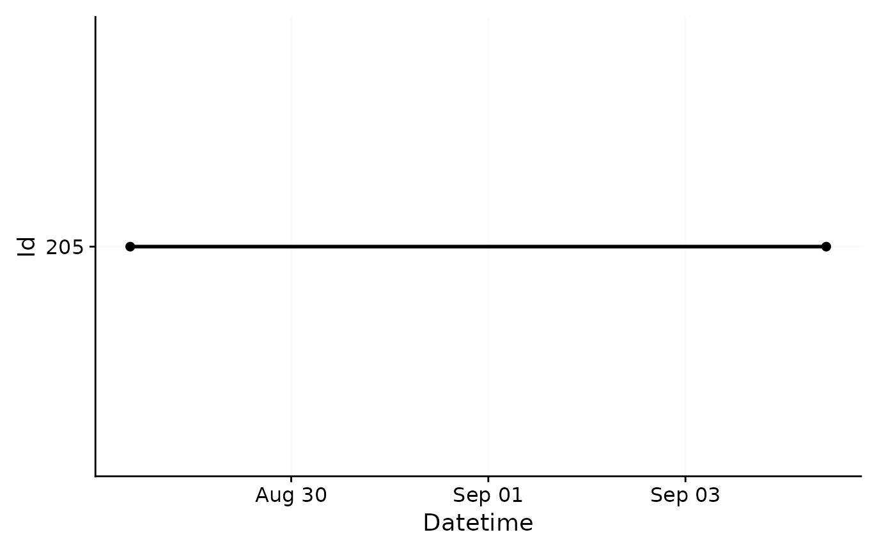
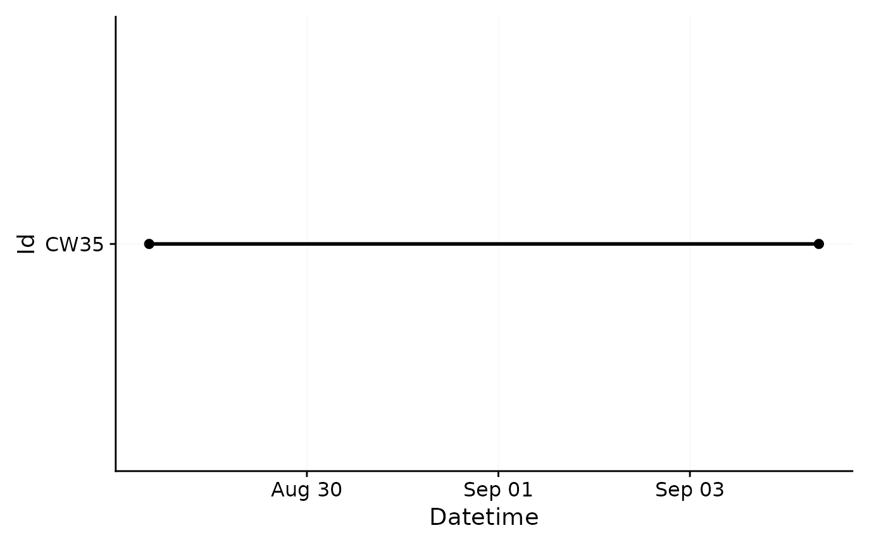

Join Light logging datasets that have a common structure. The least commonality are identical columns for Datetime and Id across all sets.
Usage
join_datasets(
...,
Datetime.column = Datetime,
Id.column = Id,
add.origin = FALSE,
debug = FALSE
)Arguments
- ...
Object namesof datasets that need to be joined.- Datetime.column, Id.column
Column names for the
Datetimeandidcolumns. The defaults (Datetime,Id) are already set up for data imported with LightLogR.- add.origin
Should a column named
datasetin the joined data indicate from which dataset each observation originated? Defaults toFALSEas theIdcolumn should suffice. Expects alogical.- debug
Output changes to a tibble indicating which dataset is missing the respective
DatetimeorIdcolumn. Expects alogicaland defaults toFALSE.
Value
One of
a
data.frameof joined datasetsa
tibbleof datasets with missing columns. Only ifdebug = TRUE
Examples
#load in two datasets
path <- system.file("extdata",
package = "LightLogR")
file.LL <- "205_actlumus_Log_1020_20230904101707532.txt.zip"
file.env <- "cyepiamb_CW35_Log_1431_20230904081953614.txt.zip"
dataset.LL <- import$ActLumus(file.LL, path, auto.id = "^(\\d{3})")
#>
#> Successfully read in 61'016 observations across 1 Ids from 1 ActLumus-file(s).
#> Timezone set is UTC.
#>
#> First Observation: 2023-08-28 08:47:54
#> Last Observation: 2023-09-04 10:17:04
#> Timespan: 7.1 days
#>
#> Observation intervals:
#> Id interval.time n pct
#> 1 205 10s 61015 100%

dataset.env <- import$ActLumus(file.env, path, manual.id = "CW35")
#>
#> Successfully read in 20'143 observations across 1 Ids from 1 ActLumus-file(s).
#> Timezone set is UTC.
#>
#> First Observation: 2023-08-28 08:28:39
#> Last Observation: 2023-09-04 08:19:38
#> Timespan: 7 days
#>
#> Observation intervals:
#> Id interval.time n pct
#> 1 CW35 29s 1 0%
#> 2 CW35 30s 20141 100%

#join the datasets
joined <- join_datasets(dataset.LL, dataset.env)
#compare the number of rows
nrow(dataset.LL) + nrow(dataset.env) == nrow(joined)
#> [1] TRUE
#debug, when set to TRUE, will output a tibble of datasets with missing necessary columns
dataset.LL <- dataset.LL %>% dplyr::select(-Datetime)
join_datasets(dataset.LL, dataset.env, debug = TRUE)
#> # A tibble: 2 × 2
#> column.names.in dataset.LL
#> <chr> <lgl>
#> 1 Datetime FALSE
#> 2 Id TRUE